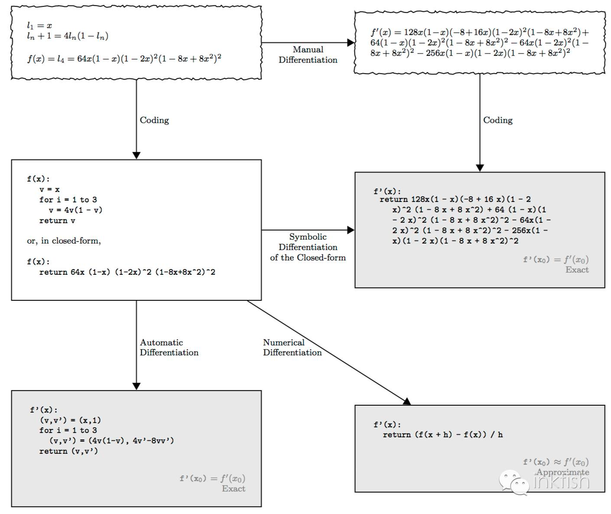
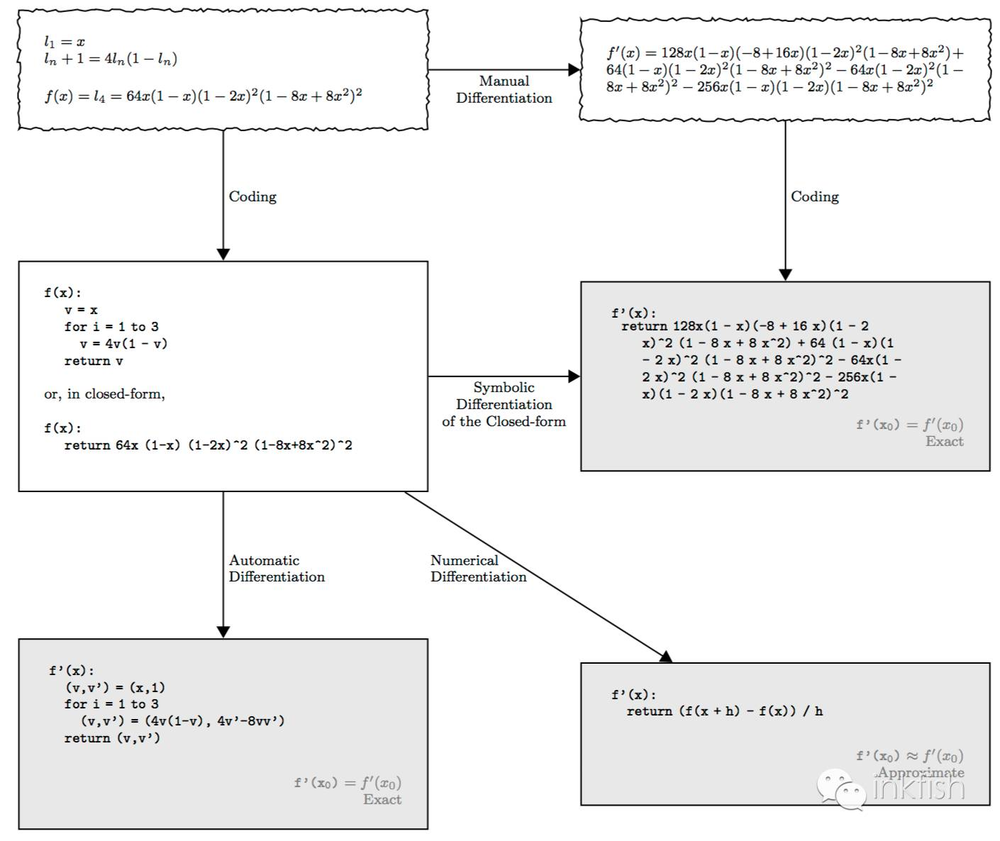

计算机求导，有四种方法:
- 人工解析微分法（manual analytical differentiation）
- 数值微分法（numerical differentiation）
- 符号微分法（symbolic differentiation）
- 自动微分法（automatic differentiation）

参考:
计算机求导的四种方式
Automatic differentiation in machine learning: a survey
计算机求导，有四种方法:

参考:
计算机求导的四种方式
Automatic differentiation in machine learning: a survey